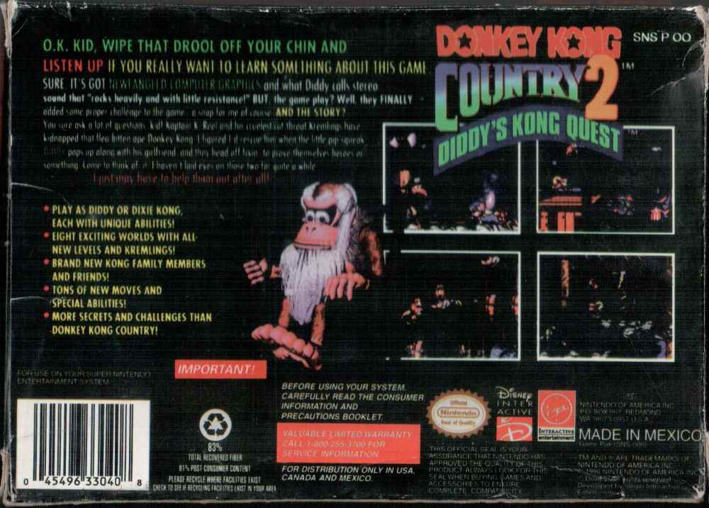

16 MEG Donkey Kong Country 2: Diddy Kong`s Quest ( New Game )
Картридж со второй частью ДК Кантри, интересен некоторыми особенностями о которых дальше, во-первых, уже как обычно, что выдает пиратку?1) Очень плохое изображения на коробке, в которой содержался сам картридж, такое чувство, что кто-то переиграл с контрастностью из-за чего такая фигня и случилась.
2) Отсутствие значка Nintendo Seal Of Quality на коробке, хотя с обратной стороны все на месте.
3) Откуда-то среди разработчиков игры на задней панели взялись Vigin Interactive и Disney Interactive, хотя в оригинале игра разработана Nintendo и Rareware.
4) На части коробки, откуда картридж достается надпись Nintedo вместо Nintendo.
5) Криво отрезанная надпись логотипа на слове Diddy сверху и сниз.
6) Обычные крестовые винтики вместо оригинальных нинтендовских.
7) Неаккуратное исполнение надписи Seal Of Quality на самом картридже.
8) Зачем то дважды написано Super Nintendo на обложке.
9) Задняя сторона, вырезы и надписи.
10) Плата картриджа с бескорпусным кристаллом.
То есть очень сложно по такому количеству косяков очень сложно не понять что перед нами пиратский образец. Интересно однако даже не все это, а интересно то, что на самом картридже есть небольшая наклеечка, на которой изображен инопланетянин и надпись New Game. Получается картридж распространялся этой компанией, и их деятельность начиналась еще во времена когда кто-то еще знал про Супер Нинтендо?( прим. 1996-1998 гг. получается ). Это пока единственный образец с таким обозначением, сколько подобного рода картриджей ими распространялось неизвестно, но эту тайну разгадать было бы очень интересно.
Интересно что игра не запускается на NTSC приставке, выдавая экран отказа а ля не предназначен для вашей приставки, что говорит нам о том, что внутри европейская версия.
Картридж кстати оказался с батарейкой, но она была севшая, вместо 3 вольт давала всего лишь 0.14 вольт. Возможно поменяю ее, и судя по присутствию батарейки - сохранения по идее в этой версии предусмотрены, заменю батарейку - проверим.
Внутри у нас обычная игра DK Country 2: Diddy Kong`s Quest ( Европейская ).
Дополнительные фото и описание к ним:
